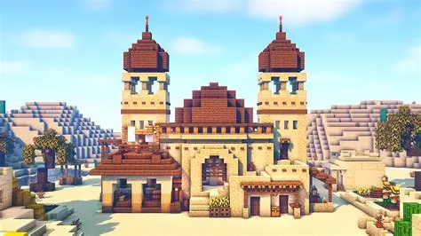
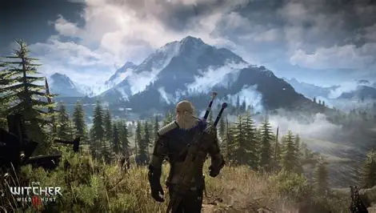

¿Cómo funcionan los juegos de mundo abierto?
Los juegos de mundo abierto funcionan ofreciendo al jugador libertad para explorar un mundo virtual extenso, interactuar con el entorno y decidir cómo avanzar en la historia o actividades secundarias. La clave está en que no hay un camino único: el jugador elige su propio ritmo y estilo de juego.
caracteristicas
Personalización: muchos títulos permiten modificar personajes, construir objetos o alterar el entorno.
Interactividad avanzada: sistemas dinámicos generan eventos espontáneos, como ataques o fenómenos naturales.
Libertad de movimiento: puedes desplazarte por el mapa sin barreras invisibles ni rutas predeterminadas.
Exploración no lineal: las misiones principales pueden hacerse en cualquier orden o incluso ignorarse.
Ejemplos populares

Minecraft: un amplio mundo donde puedes explorar, construir, completar logros, vencer a jefes y muchas mas posibilidades
Red Dead Redemption 2: ambientado en el Viejo Oeste, considerado uno de los mundos abiertos más detallados y realistas jamás creados.
The Witcher 3: Wild Hunt: combina narrativa profunda con un mundo abierto lleno de misiones secundarias y decisiones que afectan la historia.
